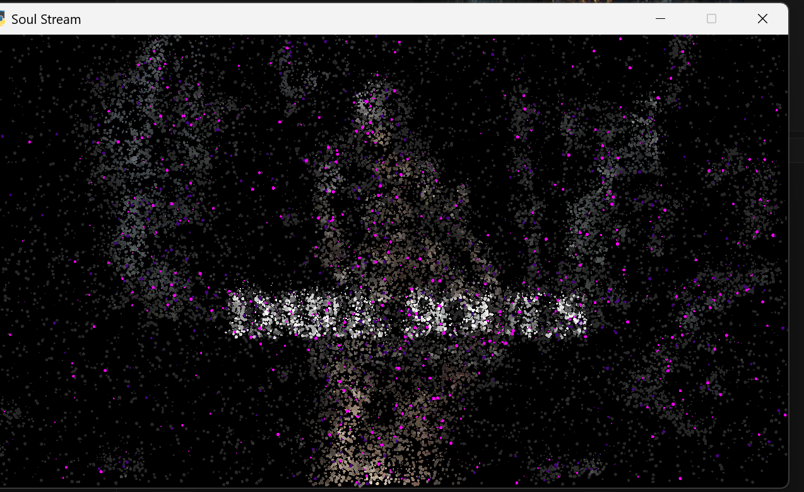
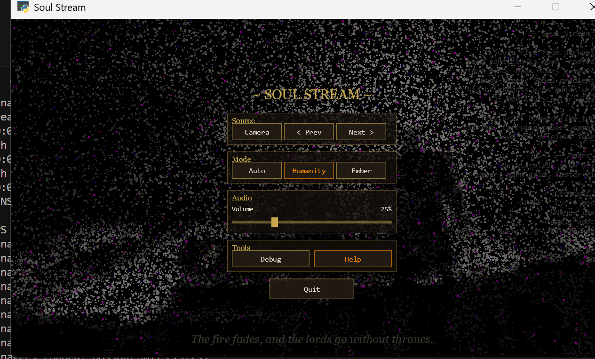
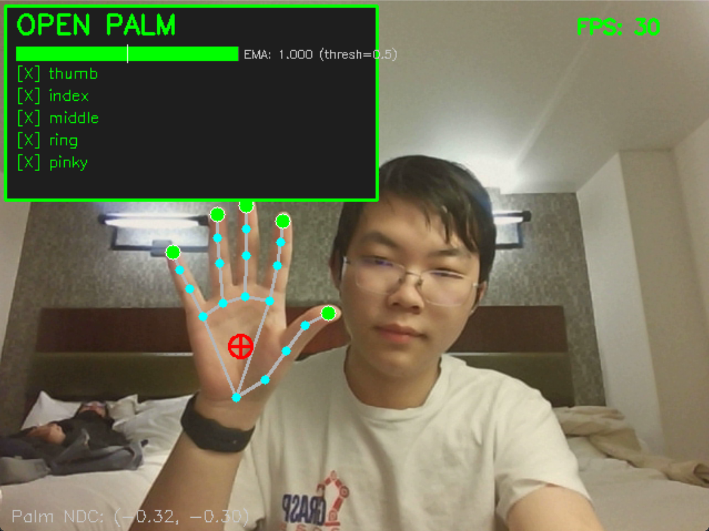
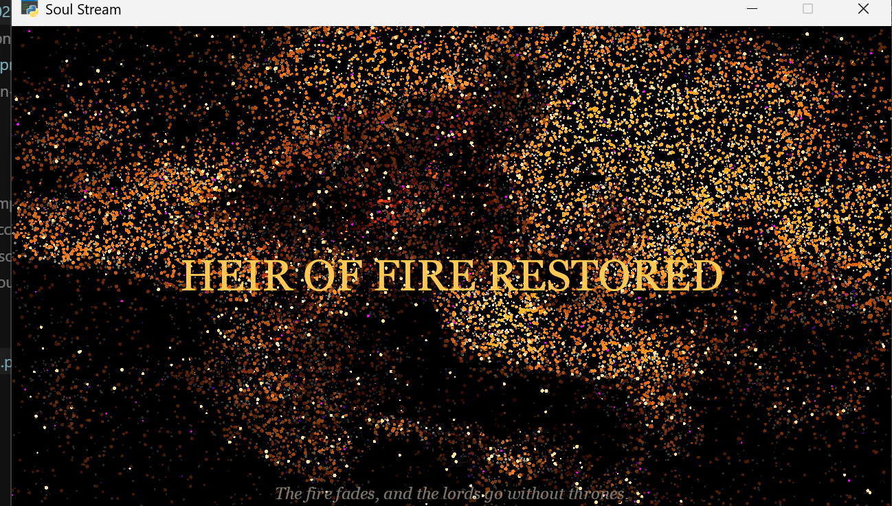

Particles / 粒子
边缘与亮度决定灵魂生成位置；鼠标、手掌、姿态和流场会改变粒子速度、颜色和寿命。
Edges and brightness drive soul spawning; mouse input, palms, pose, and flow fields reshape velocity, color, and lifetime.

Bilingual Project Guide / 中英双语项目指南
一个黑暗幻想气质的实时粒子可视化作品：灵魂从图像边缘、摄像头亮度、手势与身体姿态中被召唤出来，在 Humanity 与 Ember 状态之间呼吸、上升、散开、燃烧。
A real-time dark-fantasy particle visualizer where souls emerge from image edges, webcam brightness, hand gestures, and body pose, breathing between Humanity and Ember states.
01 / Overview
SoulStream 是一个 Python + OpenGL 桌面视觉程序。它读取 image/ 里的作品图像，通过 Canny 边缘、Sobel 梯度、亮度采样与实时物理更新生成最多约 25,000 个发光粒子。开启摄像头后，它还能根据运动、手掌张开、MediaPipe 姿态识别和人体分割切换视觉行为。
SoulStream is a Python + OpenGL desktop visual instrument. It reads artwork from image/, then uses Canny edges, Sobel gradients, brightness sampling, and live physics to render up to roughly 25,000 glowing particles. With a webcam, it also reacts to motion, open palms, MediaPipe pose detection, and person segmentation.
边缘与亮度决定灵魂生成位置；鼠标、手掌、姿态和流场会改变粒子速度、颜色和寿命。
Edges and brightness drive soul spawning; mouse input, palms, pose, and flow fields reshape velocity, color, and lifetime.
摄像头模式支持运动触发 Ember、手部骨架、七种姿态效果，以及 Glass 模式的人体遮罩。
Camera mode supports motion-triggered Ember, hand skeletons, seven pose effects, and body masks for Glass mode.
粒子 GPU 打包缓冲区预分配，渲染器按模式复用资源，避免在每帧创建 pyglet 图形对象。
GPU particle buffers are preallocated, renderers reuse mode resources, and pyglet drawing objects are not recreated per frame.



这个文档站不是营销页，而是可运行项目的使用手册：面向玩家、展示者和维护者。
This documentation site is not a marketing shell; it is the operating manual for players, presenters, and maintainers.
02 / Setup
SoulStream 需要 Python 3.10+、OpenGL 3.3 可用的显卡，以及项目根目录中的 MediaPipe 模型文件。模型文件是二进制资源，不随 git 提交。
SoulStream requires Python 3.10+, an OpenGL 3.3 capable GPU, and MediaPipe model files in the project root. The models are binary assets and are not committed to git.
pip install -r requirements.txtcurl -L -o hand_landmarker.task https://storage.googleapis.com/mediapipe-models/hand_landmarker/hand_landmarker/float16/latest/hand_landmarker.task
curl -L -o pose_landmarker_lite.task https://storage.googleapis.com/mediapipe-models/pose_landmarker/pose_landmarker_lite/float16/latest/pose_landmarker_lite.task
curl -L -o selfie_segmenter_landscape.tflite https://storage.googleapis.com/mediapipe-models/image_segmenter/selfie_segmenter_landscape/float16/latest/selfie_segmenter_landscape.tflitepython main.py03 / Controls
| Input | 中文 | English |
|---|---|---|
| Enter | 从加载界面进入开场。 | Leave the loading screen and start the intro. |
| Space | 循环 Auto / Humanity / Ember。 | Cycle Auto, Humanity, and Ember modes. |
| Left / Right | 切换 image/ 中的源图像。 | Switch source artwork from image/. |
| C | 开启或关闭摄像头输入。 | Toggle webcam input. |
| H | 开启或关闭手部追踪。 | Toggle hand tracking. |
| P | 开启或关闭姿态检测。 | Toggle pose detection. |
| V | 循环六种视觉模式。 | Cycle the six visualization modes. |
| 1-6 | 直接跳转到指定视觉模式。 | Jump directly to a visualization mode. |
| A | 循环五种艺术预设。 | Cycle the five art presets. |
| L | 为 Glass 模式锁定干净背景板。 | Capture a clean plate for Glass mode. |
| M | 静音或恢复环境音。 | Mute or restore ambience. |
| R | 将所有灵魂冲击散开。 | Scatter all souls with a shockwave. |
| B | 在屏幕中央生成 150 个灵魂。 | Burst 150 souls from screen center. |
| G | 翻转重力，让灵魂下坠。 | Flip gravity so souls fall. |
| D | 显示或隐藏调试层。 | Toggle the debug overlay. |
| F1 | 显示浮动帮助。 | Show floating help. |
| S | 保存截图到 result/。 | Save a screenshot to result/. |
| T | 切换延时摄影输出。 | Toggle timelapse output. |
| Tab | 打开或关闭 GUI 菜单。 | Open or close the GUI menu. |
| F11 | 切换全屏。 | Toggle fullscreen. |
| Esc | 关闭菜单或退出。 | Close the menu or quit. |
| Mouse move | 图像模式下推开光标附近的灵魂。 | In image mode, repel nearby souls from the cursor. |
| Left click | 在光标位置生成粒子爆发。 | Create a particle burst at the cursor. |
| Right hold | 将灵魂吸向光标。 | Attract souls toward the cursor. |
04 / Visualization Modes
原始圆形发光粒子云，适合展示图像边缘与灵魂上升的基础视觉。
The original circular glowing point cloud, best for image-edge souls and the core rising motion.
每个粒子从上一帧位置到当前帧位置留下衰减线段，形成流动痕迹。
Each particle draws a fading segment from previous to current position, creating flowing trails.
在粒子场上叠加 MediaPipe 手部与身体骨架，并使用当前艺术预设着色。
Overlays MediaPipe hand and body skeletons above the particle field using the active art preset.
CPU 计算二维 curl-noise 场，改变粒子速度，让灵魂路径变成丝带状流动。
Computes a CPU curl-noise field that bends particle velocity into ribbon-like movement.
从存活粒子中采样，绘制旋转三角符号，形成仪式感的几何层。
Samples live particles to draw rotating triangle sigils, adding a ritual geometric layer.
用摄像头画面、锁定背景板和人体分割遮罩生成折射隐身效果。先按 C 开摄像头，离开画面，按 L 锁定背景，再回到画面中。
Uses the live camera, a locked clean plate, and person segmentation to create refractive invisibility. Press C, step out, press L, then step back in.
05 / Camera And Models
Camera 支持 enable_hand、enable_pose、enable_body 三个特性开关。手部和姿态默认开启，人体分割默认关闭，并在 Glass 模式需要时懒加载。运行时可通过菜单或快捷键切换，以便在性能与表现之间取舍。
Camera supports enable_hand, enable_pose, and enable_body feature flags. Hand and pose start enabled; body segmentation starts disabled and is lazily enabled for Glass mode. Runtime toggles let you trade visual capability for CPU headroom.
张开的手掌会点燃附近粒子，并在 Glass 模式中触发折射涟漪。
An open palm kindles nearby particles and triggers refraction ripples in Glass mode.
识别 Praise the Sun、Point Down、Bow 等姿态并播放视觉与音频反馈。
Recognizes poses such as Praise the Sun, Point Down, and Bow, then plays visual and audio reactions.
为 Glass 模式提供人体遮罩，让背景板折射只发生在身体轮廓附近。
Provides the body mask for Glass mode so clean-plate refraction follows the person silhouette.
06 / Architecture
main.py
src/
app.py
overlays.py
visualization.py
gui.py
particles.py
camera.py
hand_tracker.py
pose_tracker.py
body_segmenter.py
image_source.py
shaders/
particle.vert / particle.frag
skeleton.vert / skeleton.frag
shapes.vert / shapes.frag
image/
audio/
result/
main.py 只负责把 src/ 加入 sys.path 并启动应用。SoulStreamApp 在 src/app.py 中管理窗口、状态机、输入和每帧渲染。视觉模式被拆成渲染器类，GUI 和 overlay 只创建一次并在窗口变化时重定位。粒子系统负责生成、物理、GPU 打包和交互冲击。
main.py only adds src/ to sys.path and starts the app. SoulStreamApp in src/app.py owns the window, state machine, input, and draw loop. Visualization modes are separate renderer classes, while GUI and overlays are created once and repositioned on resize. The particle system handles spawning, physics, GPU packing, and interaction impulses.
07 / Troubleshooting
如果手部、姿态或 Glass 模式无法启动，请确认三个模型文件位于项目根目录，而不是 src/ 或 docs/。
If hand, pose, or Glass mode fails to start, confirm the three model files live in the project root, not under src/ or docs/.
项目要求 OpenGL 3.3。请更新显卡驱动，并尽量使用独立显卡或支持现代 OpenGL 的集显。
The app requires OpenGL 3.3. Update graphics drivers and prefer a discrete GPU or a modern integrated GPU with OpenGL support.
先开启摄像头，进入 Glass，离开画面并按 L 锁定干净背景板。没有背景板或人体遮罩时，Glass 会回退到普通摄像头画面。
Enable camera, switch to Glass, step out, and press L to lock a clean plate. Without a clean plate or body mask, Glass falls back to the raw camera view.
关闭暂时不用的 Hand、Pose 或 Glass 分割功能。调试层也会增加绘制工作量，演示时可关闭。
Disable unused Hand, Pose, or Glass segmentation features. The debug overlay also adds drawing work and can be turned off during demos.
08 / GitHub Pages
本仓库已准备好 GitHub Actions Pages 工作流。推送到 main 后，GitHub 会把 docs/ 目录作为静态站点发布。首次使用时，请在 GitHub 仓库中进入 Settings → Pages，把 Source 选择为 “GitHub Actions”。
This repository includes a GitHub Actions Pages workflow. After pushing to main, GitHub publishes the docs/ directory as a static site. For the first run, open Settings → Pages in the repository and set Source to “GitHub Actions”.
提交 docs/ 与 .github/workflows/pages.yml。
Commit docs/ and .github/workflows/pages.yml.
推送到 main 分支。
Push to the main branch.
在 Actions 中等待 “Deploy docs to GitHub Pages” 完成。
Wait for “Deploy docs to GitHub Pages” to complete in Actions.